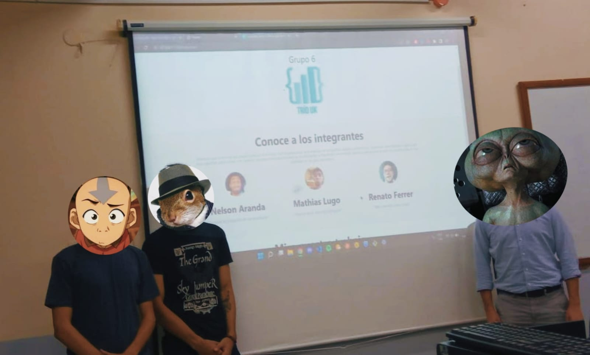

Haciendo conexiones.
Logrando resultados.
Grupo 6 de la catedra Ingeniería de Software 3 del año 2022 en la universidad Catolica Nuestra Señora de la Asunción.
Creemos que la tecnología puede cambiar el mundo. Nos organizamos para trabajar en pequeños equipos autónomos,
siguiendo metodologías ágiles que nos capacitan para actuar con rapidez.
Nuestra máxima prioridad es ser eficientes y desarrollar tecnología pionera
que mejore la vida de las personas en las ciudades en las que operamos.
